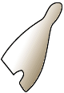

|

White crown
The White Crown symbolised the pharaoh's control over Upper Egypt,and was worn on occasions involving Upper Egypt only.
|
Red crown
The Red Crown symbolised the pharaoh's control over Lower Egypt, and was worn on occasions involving Lower Egypt only.
|
|
Double crown
The Double Crown was a combination of the Red Crown of Lower Egypt and the White Crown of Upper Egypt. It symbolised the joining of the two lands, and the pharaoh's control over the two lands.
|
Blue crown
The Blue Crown (the Khepresh) was a blue cloth or leather headdress decorated with bronze or gold discs. The Blue Crown was worn in battles, as well as on ceremonial occasions.
|